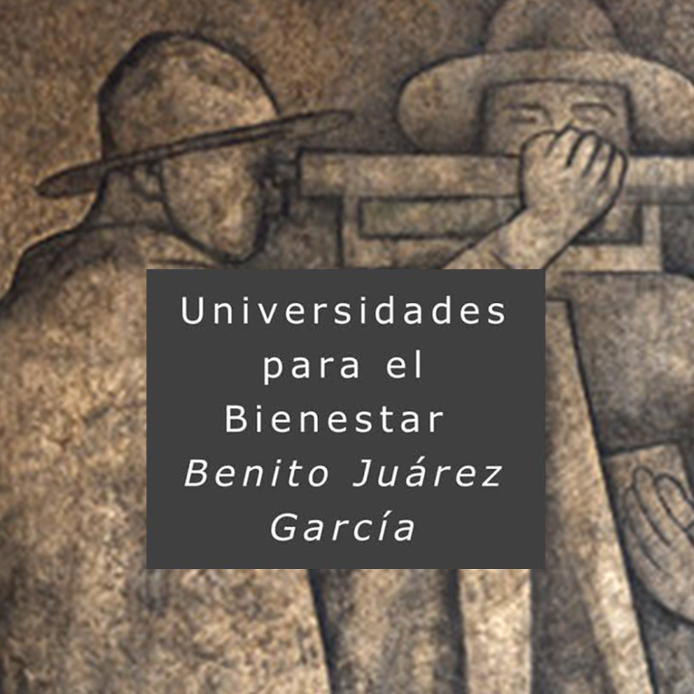
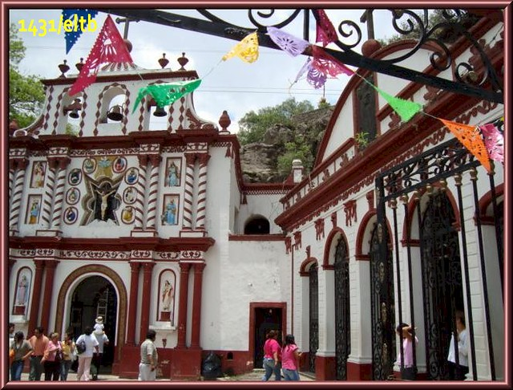
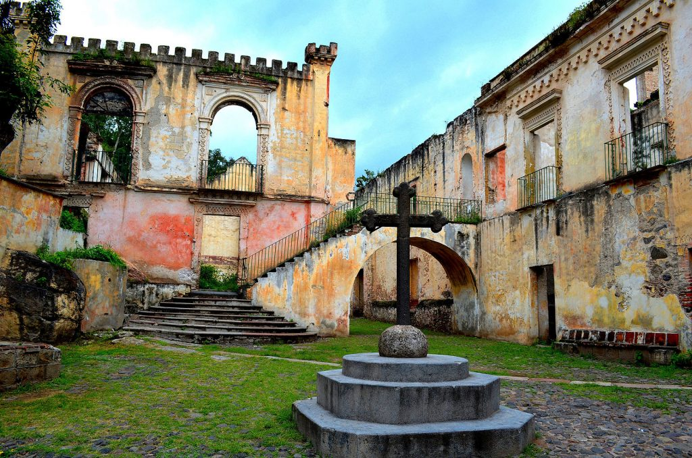
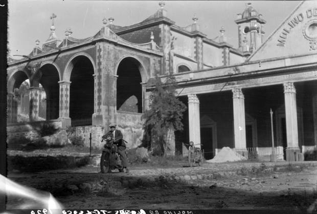
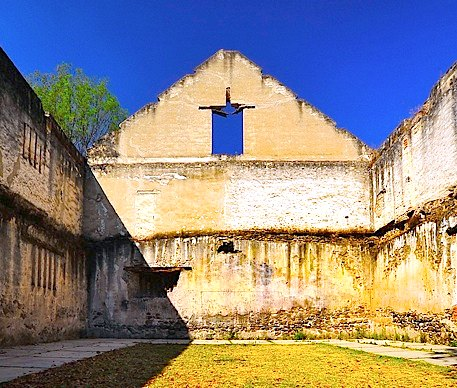

Mendes Arias Jonathan Uriel
Montiel Ortiz Yahir Fernando
Espejel Hernández Juan Manuel
Salazar Gutierrez Juan Pablo
El Molino de Flores es una antigua hacienda ubicada en Texcoco, Estado de México. Se estableció en el siglo XVI y ha pasado por diversas etapas, desde la producción agrícola hasta su uso como cárcel durante la Revolución Mexicana.
En el siglo XIX, la hacienda fue propiedad de Juan Manuel González, quien amplió su producción y la convirtió en un centro de comercio regional. Posteriormente, con la Revolución, dejó de funcionar como hacienda y se convirtió en un sitio histórico.
📌 Dato curioso: La hacienda ha sido utilizada como locación para diversas películas mexicanas, debido a su apariencia colonial bien conservada.
Construida en el periodo colonial, servía como lugar de culto para los dueños y trabajadores. La capilla tiene un altar barroco y una imagen del Señor de la Presa, una figura venerada por la comunidad.
Dimensiones: 15m x 10m | Altitud: 2,250 m sobre el nivel del mar.

📌 Dato curioso: Se dice que la imagen del Señor de la Presa fue hallada en el río cercano y por eso se construyó la capilla en su honor.
La Casa Principal era la residencia de los dueños. Posee una estructura de piedra con grandes ventanales y un patio central con jardines.
Dimensiones: 30m x 20m

📌 Dato curioso: En los años 50, la casa fue utilizada como set de filmación para películas del cine de oro mexicano.
El tinacal era el área donde se fermentaba el aguamiel para producir pulque, una bebida tradicional mexicana.
Producción: 1,500 litros semanales.

📌 Dato curioso: Se dice que los hacendados vendían el pulque a comerciantes de la Ciudad de México.
Almacenes para guardar el grano cosechado. Estas estructuras tenían techos altos para evitar la humedad.
Capacidad: 50 toneladas.

📌 Dato curioso: Algunas trojes antiguas aún conservan herramientas agrícolas de la época.